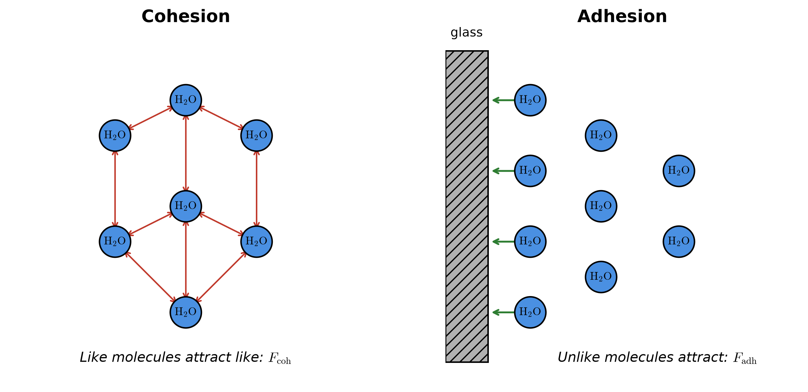
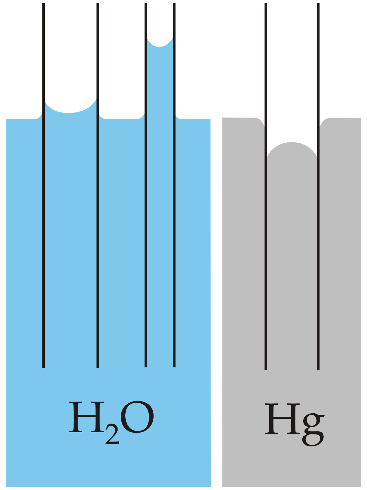

Fluids at Rest — Lesson 1
Adhesion & Cohesion
Greenoak International School · Grade 10 Physics
What is a fluid?
- A fluid is any substance — liquid or
gas — that can flow and take the shape of its container.
- This week we study fluids at rest (not
flowing).
- The branch of physics is called hydrostatics.
Density
\[\rho = \dfrac{m}{V}\]
- ρ — density, unit kg m⁻³
- m — mass (kg)
- V — volume (m³)
Values to remember:
- Water: ρ ≈ 1000 kg m⁻³
- Mercury: ρ ≈ 13 600 kg m⁻³
Cohesion
Cohesion is the force of attraction between
molecules of the same substance.
Examples:
- water — water
- mercury — mercury
Adhesion
Adhesion is the force of attraction between
molecules of different substances.
Examples:
- water — glass
- chalk — blackboard
- ink — paper
The molecular picture

- Same-substance arrows → cohesion.
- Liquid-to-solid arrows → adhesion.
The meniscus
The meniscus is the curved upper surface of a liquid
in a tube.

- Concave — dips in the middle (water in glass).
- Convex — bulges up in the middle (mercury in
glass).
The rule
If adhesion > cohesion:
- the liquid wets the surface
- the meniscus is concave
- example: water in a glass tube
If cohesion > adhesion:
- the liquid does not wet the surface
- the meniscus is convex
- example: mercury in a glass tube
Everyday examples
| Example |
Which force wins? |
| Ink spreading on paper |
adhesion > cohesion |
| Water beading on a waxed car |
cohesion > adhesion |
| Water rising on clean glass |
adhesion > cohesion |
| Mercury forming a droplet |
cohesion > adhesion |
Remember this
Memory aid:
- Cohesion → Common substance
(same).
- Adhesion → Add a different
substance.
Do not swap these two definitions — it is the most
common exam error.
Class task
Copy each question into your exercise book and answer there.
- Distinguish, in one sentence each, between adhesion and
cohesion.
- State one everyday example of adhesion and one of cohesion.
- A water drop beads on a waxed car bonnet but spreads on a clean
window pane. Explain the difference in terms of adhesion and
cohesion.
- Sketch and label the meniscus of (a) water in a glass test tube, (b)
mercury in a glass test tube. State which force dominates in each
case.
Homework
Bring written answers to Lesson 2.
- Distinguish between the forces of adhesion and cohesion. Give one
example of each.
- Mercury is preferred to water as a thermometric liquid because it
has: A higher density, B lower
specific heat capacity, C anomalous expansion,
D strong adhesive forces. State the correct option and
give one physical reason.
- Explain, in two sentences, why ink spreads on paper but water beads
on a greasy plate.
- State whether each of the following describes adhesion or cohesion:
- water rising up blotting paper;
- a mercury droplet remaining compact on glass;
- chalk marking a blackboard;
- soap film clinging to a wire frame.